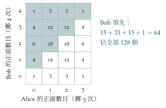

STEP I 2016，第 12 題
繼續之前，請先閱讀題目（原題為英文）。題目載於 STEP Support Programme 的題目資料庫： step.maths.org/questions/16-s1-q12
引子
Bob 比 Alice 多擲一枚硬幣。他擲得的正面（heads）比 Alice 多的概率（probability）是多少？他佔了優勢，但多擲一次不保證多一個正面，而且平手算他輸。用硬算的方法做出頭兩個情況，兩次的答案都是 \(\frac12\)。這是巧合嗎？
不是巧合，而且有一個只需一句話的證明：只要留意到 Bob 擲得的正面或反面（tails）必有其一比 Alice 多，但不會兩者皆多。這道題目是一個典範，示範了計算如何提示出規律，而巧妙的對稱性（symmetry）又如何解釋這個規律。
動筆之前
Alice 擲兩次：她擲得正面的次數的分佈（distribution）是甚麼？擲三次的 Bob 又如何？
Alice 擲得 \(0, 1, 2\) 個正面的概率分別是 \(\frac14, \frac24, \frac14\)；Bob 擲得 \(0, 1, 2, 3\) 個正面的概率分別是 \(\frac18, \frac38, \frac38, \frac18\)。
逐步解題
階段 1 硬算
第 (i) 部分，按 Alice 擲得的正面數目逐項相加： \[\begin{aligned} \mathrm{P}(B > A) &= \tfrac14\,\mathrm{P}(B \geq 1) + \tfrac24\,\mathrm{P}(B \geq 2) + \tfrac14\,\mathrm{P}(B = 3) \\ &= \tfrac14\cdot\tfrac78 + \tfrac12\cdot\tfrac48 + \tfrac14\cdot\tfrac18 = \frac{7 + 8 + 1}{32} = \frac12. \end{aligned}\] 第 (ii) 部分是同樣的計算，只是項數較多；數一數 \(8 \times 16 = 128\) 個等可能的結果，其中 \(64\) 個是 Bob 領先（圖 12.6.1），所以答案同樣是 \(\frac12\)。
階段 2 拆開 Bob 的投擲
把 Bob 的 \(n + 1\) 次投擲看成先擲 \(n\) 次，再額外擲一次。擲完頭 \(n\) 次之後，他可能領先 Alice、與她平手，或者落後。每種情況下會發生甚麼事？
二人各擲 \(n\) 次之後，Bob 領先的概率是 \(p_2\)，平手的概率是 \(p_1\)，落後的概率是 \(p_2\)（由 Alice 與 Bob 之間的對稱性可知）。如果他領先，他會保持領先。如果平手，他額外的一擲有 \(\frac12\) 的概率令他領先。如果他落後，多一個正面最多只能追成平手。所以 \[\mathrm{P}(\text{Bob 的正面較多}) = p_2 + \tfrac12p_1.\] 由於這三種情況涵蓋了所有可能，\(2p_2 + p_1 = 1\)，因此 \(p_2 + \frac12p_1 = \frac12\)。多了一枚硬幣，Bob 擲得較多正面的概率對每個 \(n\) 都剛好是 \(\frac12\)。■
以下就是那個一句話的證明。Bob 擲 \(n + 1\) 次，所以他的正面和反面數目加起來是 \(n + 1\)，比 Alice 的多一。試證明 Bob 的正面比 Alice 多，當且僅當他的反面不比 Alice 多。由於正面與反面是對稱的，這兩個事件的概率相等，所以各為 \(\frac12\)。
事實上，記 \(H_A + T_A = n\) 及 \(H_B + T_B = n + 1\)：若 \(H_B > H_A\)，則 \(H_B \geq H_A + 1\)，所以 \(T_B = n + 1 - H_B \leq n - H_A = T_A\)；反過來，若 \(T_B \leq T_A\)，則 \(H_B \geq H_A + 1\)。所以「正面較多」與「反面較多」是互補（complementary）的，而把正面與反面對調（由於硬幣是公平的，這不會改變概率）就會把兩者互換。

回顧
計算小的情況。兩次計算都提示答案是 \(\frac12\)。
按自然的劃分來取條件。把 Bob 額外的一擲分開，問題便化為一場勢均力敵的比試再加一枚硬幣。
找出互補的一對。「正面較多」與「反面較多」互為補事件，並且在一個對稱之下互換。
背後的數學
對稱與補事件
那個漂亮的證明結合了兩個事實：在一個對稱之下互換的兩個事件概率相等，而兩個互補事件的概率之和為 \(1\)。若兩者同時成立，則每個事件的概率都是 \(\frac12\)。同樣的推理在概率論中隨處可見。在航班座位問題（第 12.5 節）中，\(S_1\) 與 \(S_n\) 在一個對稱之下互換，而最後剩下的恰好是其中一個。在六貫棋（Hex）中，由棋盤的對稱性，加上恰有一方必勝這個事實，可知先手一方佔優，不過在大棋盤上無人知道必勝策略是甚麼。
平手的可能性有多大？
當二人投擲次數相同時，平手的概率 \(p_1\) 就很重要。Alice 與 Bob 平手，即 Alice 的正面數目等於 Bob 的正面數目；利用對稱性，把 Bob 的正面換成他的反面，這個概率就等於 Alice 的正面數目加上 Bob 的正面數目等於 \(n\) 的概率，亦即在 \(2n\) 次投擲中共有 \(n\) 個正面。所以 \[p_1 = \binom{2n}{n}\frac{1}{4^n} \approx \frac{1}{\sqrt{\pi n}},\] 這裏用了斯特靈近似（Stirling’s approximation）（第 12.23 節）。平手會變得罕見，但變得很慢：各擲 \(100\) 次，平手的機會仍然約有 \(5.6\%\)。
思維技巧
當計算得出一個簡單得可疑的答案時，就要找出原因。簡單的答案通常有簡單的解釋。
在大學裏，這個習慣正是理解與計算的分野。這裏的第一個證明確認了答案；第二個證明則解釋了答案，而且可以立即推廣（試做練習 2）。
延伸練習
多擲兩枚硬幣。若 Bob 擲 \(n + 2\) 枚硬幣而 Alice 擲 \(n\) 枚，證明 \(\mathrm{P}(\text{Bob 的正面較多}) = \frac12 + \frac12\mathrm{P}(H' = H_A)\)，其中 \(H'\) 是 Bob 頭 \(n + 1\) 次投擲中的正面數目。
不公平的硬幣。若二人所用的硬幣擲出正面的概率都是 \(p\)，多擲一次時答案是否仍然是 \(\frac12\)？那個漂亮的證明中哪一步不再成立？
平手。用正文中的技巧證明 \(p_1 = \binom{2n}{n}/4^n\)，並求它在 \(n = 1, 2, 3\) 時的值。
骰子。Alice 擲 \(n\) 粒骰子，Bob 擲 \(n + 1\) 粒。Bob 擲得較多六點的概率是否等於 \(\frac12\)？
延伸閱讀
Peter Winkler, Mathematical Mind-Benders（A K Peters）。收錄大量可用對稱性解決的概率謎題。
Gabor Székely, Paradoxes in Probability Theory and Mathematical Statistics（Reidel）。
Frederick Mosteller, Fifty Challenging Problems in Probability（Dover）。